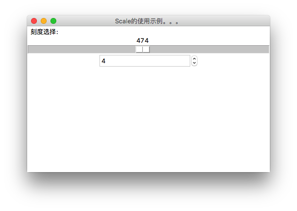
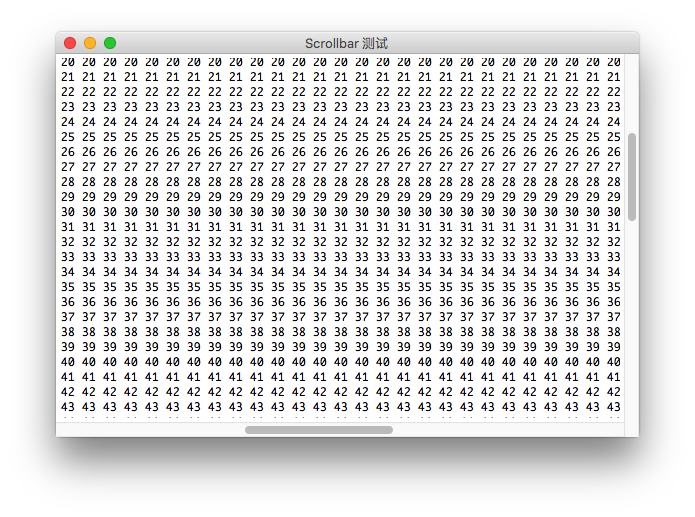

Python TK和Tkinter的GUI编程(8) Scalet和Spinbox的简单使用
作者:J.sky 发布时间:2017-09-28 09:50:15 Tag:
Python GUI
Scalet和Spinbox 是tk中用来调节刻度的小部件。
Scalet 滑动模块部件
Scalet 在使用中有几个必要的地方：
- 设置刻度，
from_=0, to=1000,还可以from_=0, to=10,resolution=0.1,设置每次调结刻度值 - 滑块滑动事件，当滑动时，返回当前的刻度，有二种方法，无论哪种方法，需要先绑定回调函数
command=prtsa - 取回当前刻度值，回调函数包括一个text字符串参数，通过这个参数可以直接返回当前的刻度值，另外还可以通过绑定变量来返回刻度值。
Spinbox
- 绑定回调函数，然后通过
get()方法返部件当前值。
源码

import tkinter as tk
root = tk.Tk()
root.title("Scrollbar 测试")
#分别创建一个横向，一个坚向的滚动条，
ybar = tk.Scrollbar(root)
ybar.pack(fill=tk.Y, side=tk.RIGHT)
xbar = tk.Scrollbar(root,orient=tk.HORIZONTAL)#orient=tk.HORIZONTAL表示为坚向滚动
xbar.pack(fill=tk.X, side=tk.BOTTOM,)
# 创建文本框，并设置横向及坚向的滚动条，wrap='none'表示文本不换
t = tk.Text(root,yscrollcommand=ybar.set,xscrollcommand=xbar.set, wrap='none')
t.pack(fill=tk.BOTH)
# 添加一些字符串
s = ""
for i in range(100):
for j in range(100):
s = s+str(i)+" "
s = s+"\n"
t.insert(tk.END,s)
#为滚动条添加对应的函数，添加后，滚动条才会有效滚动
ybar.config(command=t.yview)
xbar.config(command=t.xview)
root.mainloop()
相关参考
本文源码下载：
Python TK和Tkinter的GUI编程(7) Scrollbar的使用
作者:J.sky 发布时间:2017-09-27 21:23:07 Tag:
Python GUI
Scrollbar
Scrollbar就是窗口中的滚动条，一般应用在文本框和列表框的外围，如果内容显示超出范围之外，就会显示滚动条。
创建及使用
- 创建Scrollbar对象，通过orient设置他的滚动方向，HORIZONTAL or VERTICAL. 默认是VERTICAL。
- 在部件中指定滚动条部件
yscrollcommand=ybar.set,xscrollcommand=xbar ybar.config(command=t.yview) xbar.config(command=t.xview)设置滚动条事件，使滚动条交互起来。
源码

import tkinter as tk
root = tk.Tk()
root.title("Scrollbar 测试")
#分别创建一个横向，一个坚向的滚动条，
ybar = tk.Scrollbar(root)
ybar.pack(fill=tk.Y, side=tk.RIGHT)
xbar = tk.Scrollbar(root,orient=tk.HORIZONTAL)#orient=tk.HORIZONTAL表示为坚向滚动
xbar.pack(fill=tk.X, side=tk.BOTTOM,)
# 创建文本框，并设置横向及坚向的滚动条，wrap='none'表示文本不换
t = tk.Text(root,yscrollcommand=ybar.set,xscrollcommand=xbar.set, wrap='none')
t.pack(fill=tk.BOTH)
# 添加一些字符串
s = ""
for i in range(100):
for j in range(100):
s = s+str(i)+" "
s = s+"\n"
t.insert(tk.END,s)
#为滚动条添加对应的函数，添加后，滚动条才会有效滚动
ybar.config(command=t.yview)
xbar.config(command=t.xview)
root.mainloop()
相关参考
本文源码下载：
Python TK和Tkinter的GUI编程(6) Checkbutton Radiobutton
作者:J.sky 发布时间:2017-09-27 13:10:36 Tag:
Python GUI
Checkbutton和Radiobutton单选和多选按钮在GUI编程中是经常使用的选项选择方法，tk提供的单选与多选按钮功能虽然简约，但功能上也是足够应付日常应用了。
Checkbutton
多选按钮，因为是选择按钮，所以我们需要判断当这个按钮被点击后，应该属于选择状态，然后根据状态的选择状态返回值进行相关操作。
variable是多选按钮的一个属性，这个属性的值用来显示当前多选择按钮的状态，1时为选中，2时为释放。
select() deselect() toggle()这三个方法用来切换多选择按钮的选择状态。
Radiobutton
单选选按钮一般都是二个以上成组显示，一般最需要的就是获取单选按钮的返回值，程序中先设置一组包括属性及显示字符串的list，然后用for循环来创建多选按钮。
variable=v, value=mode,这二个属性配合使用，当使用get()方法返回值的时候，返回的是value上的这个值（这里的原因我也没明白，希望高人指点一下。），所以设置单选按钮值的时候，记得设置value。
LabelFrame
LabelFrame 是一个带线的部件容器，具体效果请看下边的截图：
源码

import tkinter as tk
def cdef():
if var.get():
strvar.set("看，我改变了！")
else:
strvar.set("有种你点我试试")
def rdoprt():
print(v.get())
r_frame['bg']=v.get()
root = tk.Tk()
root.title("Checkbutton和Radiobutton")
c_frame = tk.LabelFrame(root,text="Checkbutton", padx=5, pady=5)
c_frame.pack(fill=tk.X, side=tk.TOP)
var = tk.IntVar()
strvar = tk.StringVar()
strvar.set("有种你点我试试")
cbt = tk.Checkbutton(c_frame,textvariable=strvar, variable = var,command= cdef,)
# cbt.select()#选中
# print(var.get())
# cbt.deselect()#取消选中
# print(var.get())
# cbt.toggle()#切换选中开关
# print(var.get())
cbt.pack(side=tk.LEFT)
cbt1 = tk.Checkbutton(c_frame,text="Checkbutton", variable = var, command=cdef)
cbt1.pack(side=tk.LEFT)
r_frame = tk.LabelFrame(root,text="Radiobutton", padx=5, pady=5)
r_frame.pack(fill=tk.X, side=tk.TOP)
v = tk.StringVar()
v.set("L") # initialize
MODES = [
("#c00", "#c00"),
("#fff", "#fff"),
("#000", "#000"),
("#ccc", "#ccc"),
]
for text, mode in MODES:
b = tk.Radiobutton(r_frame, text=text,variable=v, value=mode,command=rdoprt)
b.pack(anchor=tk.W)
root.mainloop()
相关参考
本文源码下载：
Python TK和Tkinter的GUI编程(5) messagebox tk的弹出对话框
作者:J.sky 发布时间:2017-09-26 16:48:51 Tag:
Python GUI
messagebox 弹出提示框 一共有七种常用方法，基本上可以应付一般简单的程序需求了： showinfo, showwarning, showerror, askquestion, askokcancel, askyesno, or askretrycancel. 其中askquestion, askokcancel, askyesno, or askretrycancel这4个方法，应该注意一下点击按钮的返回值。
演示图如下：
  
def showMsg(str):
"""弹出窗口设置函数"""
print(str)
if str == str1[0]:
messagebox.showinfo("showinfo","信息提示框！")
elif str == str1[1]:
messagebox.showwarning("showwarning","警告框！")
elif str == str1[2]:
messagebox.showerror("showerror","错误信息框！")
elif str == str1[3]:
if messagebox.askquestion("askquestion","askquestion提示框") == messagebox.YES:
messagebox.showinfo("yes","你点了yes!")
else:
messagebox.showinfo("no","你点了no")
elif str == str1[4]:
if messagebox.askokcancel("askokcancel","askokcancel提示框"):
messagebox.showinfo("OK","你点Ok")
else:
messagebox.showwarning("cancel","你点了cancel")
elif str == str1[5]:
print(messagebox.askyesno("askyesno","askyesno提示框"))
elif str == str1[6]:
print(messagebox.askretrycancel("askretrycancel","askretrycancel提示框"))
root = tk.Tk()
root.title("messagebox 弹出对话框使用例子")
show_frame = tk.Frame(root)
show_frame.pack(fill=tk.X, side=tk.TOP)
btn1= tk.Button(show_frame, text=str1[0],command=lambda showMsg = showMsg : showMsg(str1[0]) ).pack(side=tk.LEFT)
btn2= tk.Button(show_frame, text=str1[1],command=lambda showMsg = showMsg : showMsg(str1[1]) ).pack(side=tk.LEFT)
btn3= tk.Button(show_frame, text=str1[2],command=lambda showMsg = showMsg : showMsg(str1[2]) ).pack(side=tk.LEFT)
asky_frame = tk.Frame(root)
asky_frame.pack(fill=tk.X,side=tk.TOP)
bt4 = tk.Button(asky_frame,text=str1[3],command=lambda showMsg = showMsg : showMsg(str1[3]) ).pack(side=tk.LEFT)
bt5 = tk.Button(asky_frame,text=str1[4],command=lambda showMsg = showMsg : showMsg(str1[4]) ).pack(side=tk.LEFT)
bt6 = tk.Button(asky_frame,text=str1[5],command=lambda showMsg = showMsg : showMsg(str1[5]) ).pack(side=tk.LEFT)
bt7 = tk.Button(asky_frame,text=str1[6],command=lambda showMsg = showMsg : showMsg(str1[6]) ).pack(side=tk.LEFT)
root.mainloop()